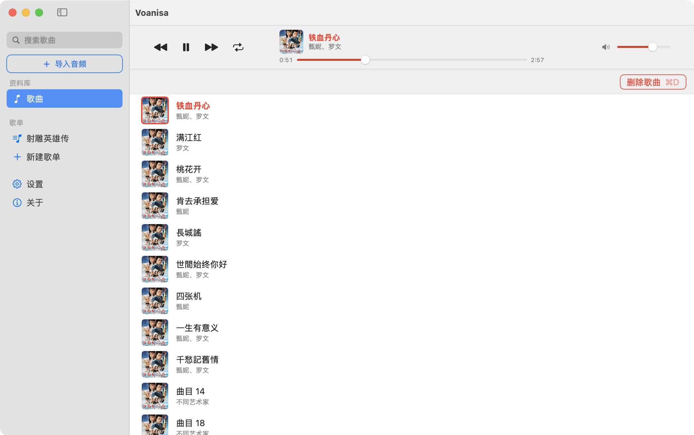
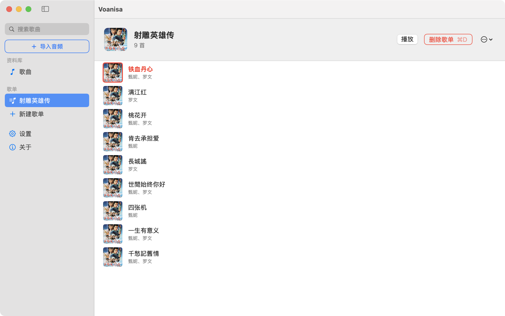

A local-first music library for macOS
macOS 上的本地音乐库
Voanisa is a local-first music library for macOS. It imports your own audio files into ~/Music/Voanisa, keeps them in a SQLite library with playlists, and plays them without a cloud service or a store account. Probing, tags, cover art, hashing, the library file and decoding all live in a portable Rust core, so the platform layer is only the window and the system integration.
Voanisa 是一个 macOS 本地音乐库。它把你自己的音频文件导入 ~/Music/Voanisa，用 SQLite 管理曲库与歌单，直接播放，不需要云服务，也不经过任何商店账号。文件探测、标签、封面、哈希、曲库文件与解码都放在可移植的 Rust 核心里，Swift 只负责窗口与系统集成。
Voanisa
Voanisa


Voanisa-1.0.1.dmg from the Download Page(Click to open) or the releases page.Voanisa-1.0.1.dmg。The released builds are signed but not notarized, which needs a paid Apple Developer account. If macOS reports an unidentified developer, either right-click Voanisa in Applications and choose Open, or clear the quarantine flag:
发布的版本已签名，但未公证（公证需要付费的 Apple 开发者账号）。如果 macOS 提示「无法验证开发者」，可在「应用程序」中右键 Voanisa 选择打开，或清除下载隔离标记：
$ xattr -dr com.apple.quarantine /Applications/Voanisa.app
macOS Sequoia (15) and above
macOS Sequoia (15) 或更高版本
Audio files on disk. Voanisa keeps its library in ~/Music/Voanisa and needs no Apple Music library.
本地磁盘上的音频文件。Voanisa 把曲库放在 ~/Music/Voanisa，不需要 Apple Music 资料库。
WMA is not supported: macOS cannot decode it and the portable core has no
ASF demuxer, so those files are marked unsupported when importing. Convert
them to FLAC or MP3 first; Scripts/convert-wma.sh
converts a whole folder in one go.
WMA 暂不支持：macOS 无法解码，核心也没有 ASF 解析器，导入时会被标为不受支持。请先转成 FLAC 或 MP3——仓库里的
Scripts/convert-wma.sh
可以一次转完整个文件夹。
Building needs Xcode 16, XcodeGen and a Rust toolchain; Scripts/build-rust.sh compiles the core before every build. The Xcode project is generated from project.yml with XcodeGen, so it is disposable:
构建需要 Xcode 16、XcodeGen 与 Rust 工具链；每次构建前 Scripts/build-rust.sh 会先编译核心。Xcode 工程由 XcodeGen 依据 project.yml 生成，因此是可以随时丢弃的产物：
$ xcodegen generate $ open Voanisa.xcodeproj
To build a signed, universal (arm64 + x86_64) DMG into dmg/:
要在 dmg/ 下生成已签名、兼容 Intel 的通用版 DMG：
$ Scripts/package-dmg.sh
Scripts/voanisadmgrun mounts a packaged image and opens it in Finder, which is the quickest way to check the install experience:
$ Scripts/voanisadmgrun # newest image in dmg/ $ Scripts/voanisadmgrun path.dmg # a specific image $ Scripts/voanisadmgrun --eject # eject it again
To have it as a command, link it somewhere on your PATH:
$ ln -s "$PWD/Scripts/voanisadmgrun" ~/.local/bin/voanisadmgrun
Scripts/voanisadmgrun 会挂载镜像并在 Finder 中打开，是检查安装体验最快的方式：
$ Scripts/voanisadmgrun # dmg/ 下最新的镜像 $ Scripts/voanisadmgrun path.dmg # 指定镜像 $ Scripts/voanisadmgrun --eject # 卸载
想把它变成一条命令，做个软链放到 PATH 里即可：
$ ln -s "$PWD/Scripts/voanisadmgrun" ~/.local/bin/voanisadmgrun
Voanisa is released under the MIT License. See LICENSE for the full text.
Voanisa 以 MIT 许可发布，完整条款见 LICENSE。